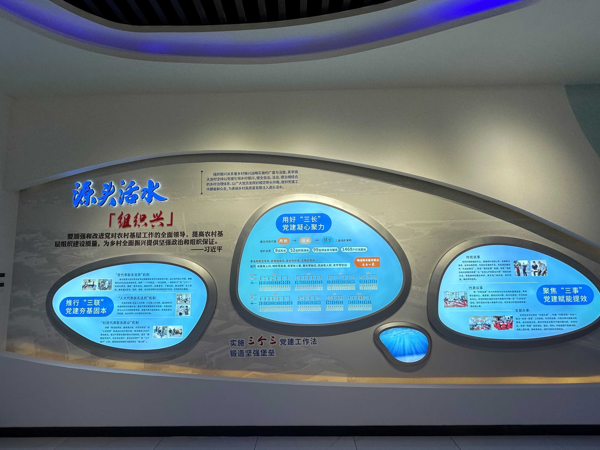
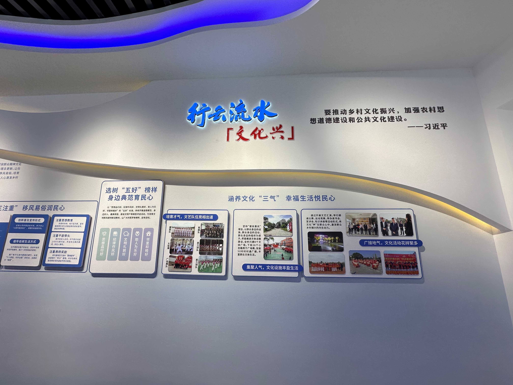
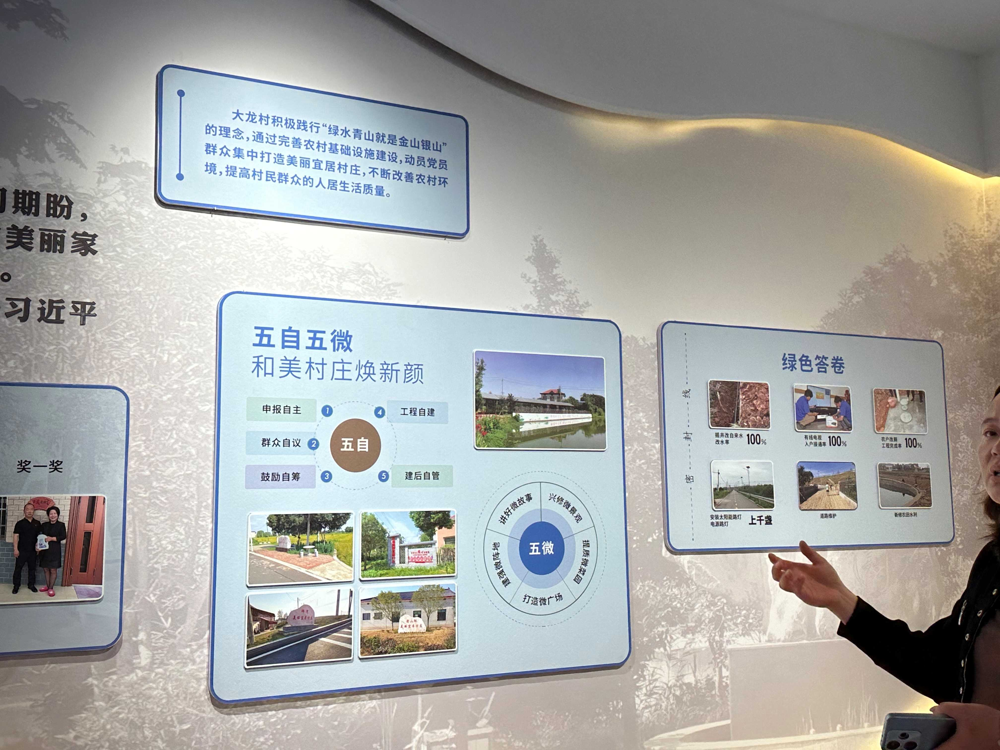
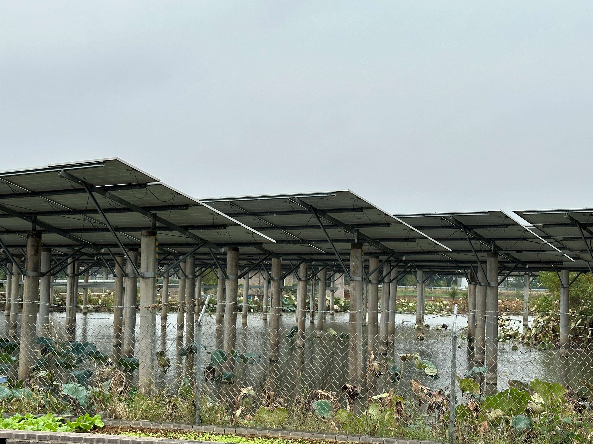
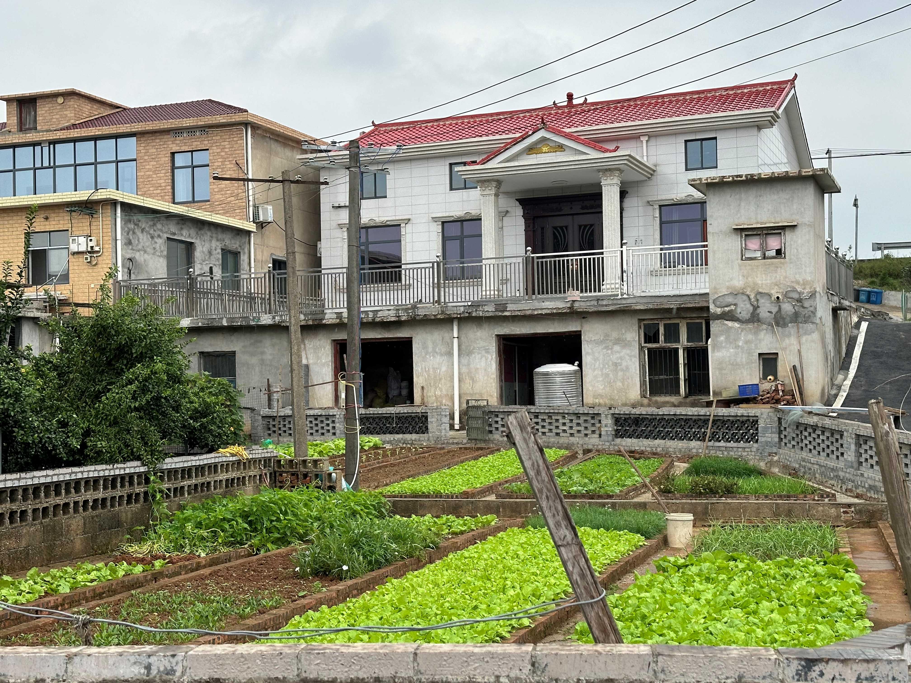
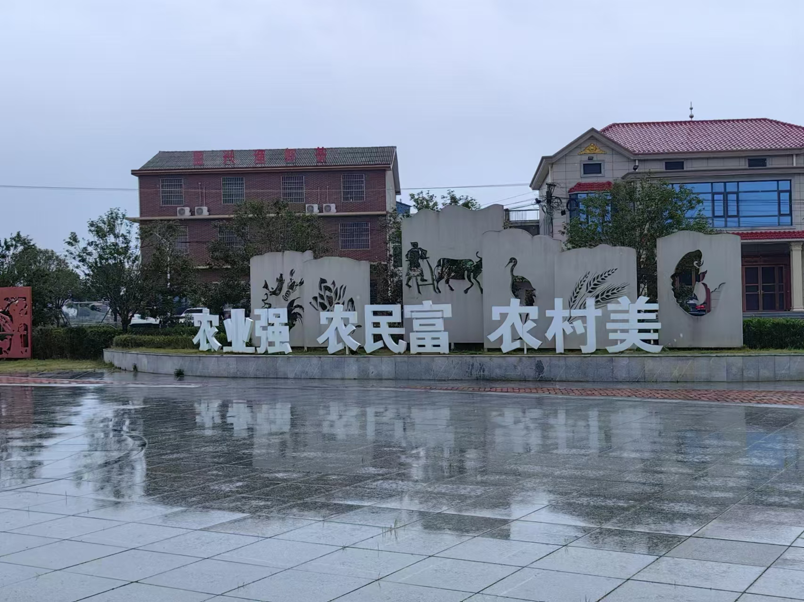
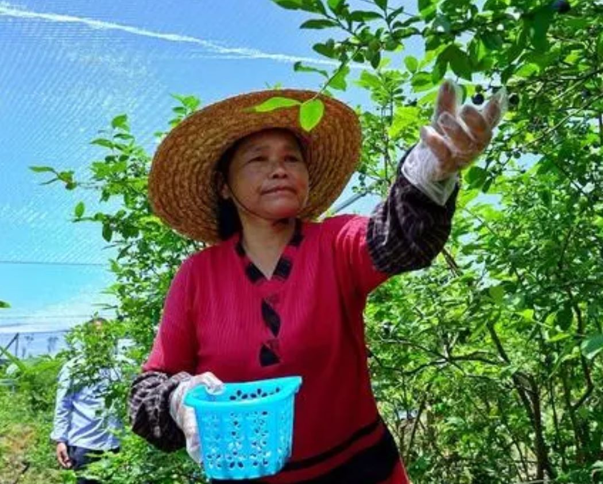
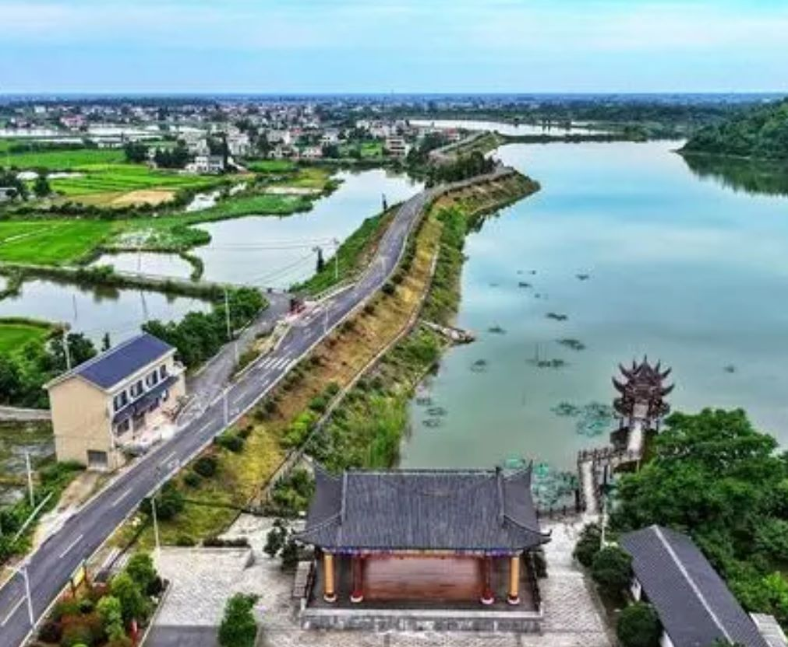
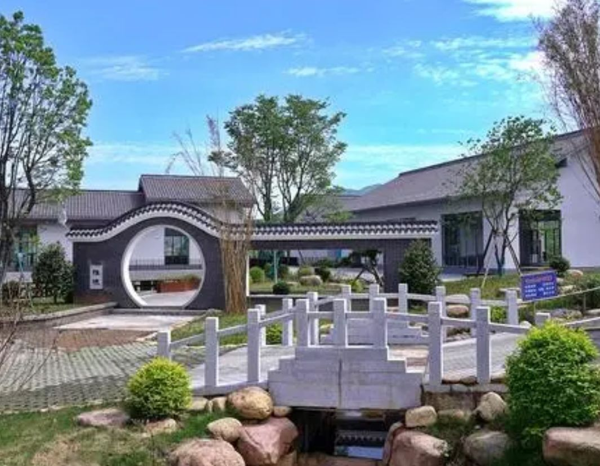
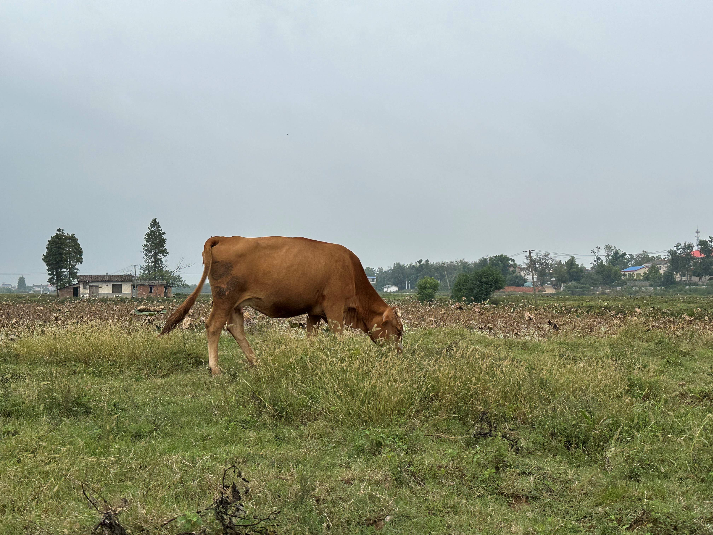

- 
- 
- 
- 
- 
- 
四月的长沙，奔赴紫云英花海之约～在这个季节里，大草原的湖畔被一片紫红色的花海所覆盖，那便是义渡亭的紫云英，它们如约绽放，迎接着每一位慕名而来的游客。
眼前的风景，仿佛是从古诗词中走出的画面。紫云英的花海与周围的自然环境和谐共生，构成了一幅动人的田园风光画。

春风和煦，草长莺飞，行走在这乡野陌上，入眼的，是诗词里的美景。大龙村"义渡亭"，此处毗邻湘江，车可以停在路边或者湘江堤坝之下，步行前往。
近年来，茶亭镇全面聚焦“三高四新”美好蓝图，立足“五彩茶亭 芳香小镇”发展定位，全力创建省市乡村振兴示范新标杆、农文旅融合新示范、党建引领基层治理新样板，获评“省级抓党建促乡村振兴示范乡镇”、“省级生态文明建设示范镇”、“省级最美油菜花乡村旅游点”等20项荣誉。
在茶亭镇大龙村，百亩荷塘里的荷花，在连片荷叶的映衬下，随风轻舞，摇曳生姿。小鸟落在荷叶上嬉戏，流连忘返。
游客在荷塘边打卡，用镜头定格这夏日里的独有好风景。一场夏日限定之旅，已正式开启，快去茶亭赏荷花、采果蔬、住民宿吧！
苏蓼垸国家农业公园，按照典型示范、连片打造整垸推进的工作思路，整合现代农业、农业综合开发及国土整理项目等涉农资金，用于开展高标准农田建设、渠系综合整治、路网完善等基础设施建设
绿芜墙绕青苔院，中庭日淡芭蕉卷。茶亭镇因地制宜探索庭院经济，通过“政府搭台、村社协同、社会运营、农户入股”的模式。
打造金色渔村、祥云山居、金色泉丰等特色院子，全镇已打造67个村级集体庭院经济示范点，特色“小庭院”撬动乡村“大振兴”。
不一样的风景
生活不应只有苟且
还应有诗和远方
给自己心灵放个假
给自己一段柔软的时光
- 
若不采取行动，就没有结果
若不迈出第一步，就无法靠近
- 
离开习惯的步调
认识全新的自己走这一趟更清楚
- 
旅行的深度，决定回味的长度
踩着缓慢的步伐，不急不徐
- 
旅行越偏远，离自己越近
背起你的行囊，往世界出发吧
@春天的紫云英绚烂夺目，夏天的荷花美艳动人，更可以休闲钓鱼摸虾，还可以体验拔红薯，摘柚子等农间乐趣，为何不来大龙村看看呢？